Setting up Bicrypto on a Virtualmin-managed server using Apache
This guide will walk you through setting up Bicrypto on a Virtualmin-managed server using Apache. The steps include uploading the Bicrypto zip file to your public_html folder, configuring Apache directives, and running the automated installer script.
Download the Bicrypto zip file from your Envato account before proceeding.
Navigate to public_html in your Virtualmin File Manager (or via SFTP/SSH) and upload the Bicrypto zip file.
Once uploaded, right-click on the Bicrypto zip file and choose Extract (or use SSH command unzip <filename.zip>).
If you see a prompt asking to overwrite existing files, click Yes. This ensures all relevant files are updated.
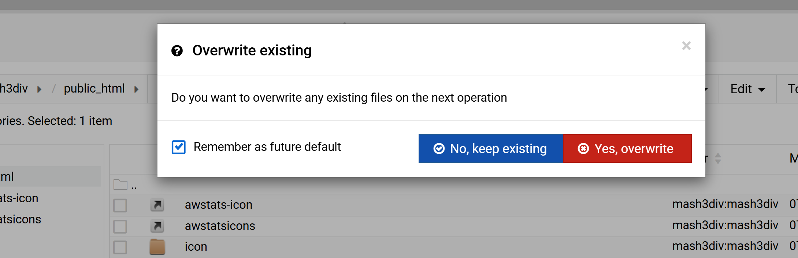In Virtualmin, navigate to Web Configuration > Configure SSL Website > Edit Directives.
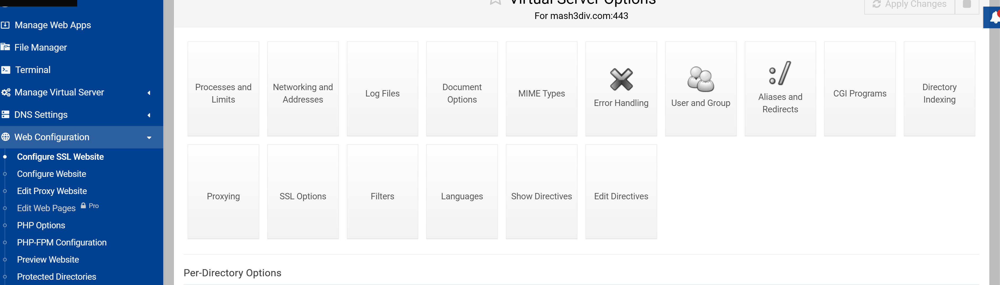Note: if you are using NGINX then follow these steps instead NGINX Configuration and then continue from Step 7
After the line DirectoryIndex, add the following configurations. Then, click Save and Close.
Protocols h2 http/1.1
ProxyPreserveHost On
KeepAlive On
KeepAliveTimeout 3
MaxKeepAliveRequests 500
ProxyTimeout 150
AddOutputFilterByType DEFLATE text/plain text/html text/xml text/css application/xml application/xhtml+xml application/rss+xml application/javascript application/x-javascript
ProxyPass /api/docs http://localhost:4000/api/docs
ProxyPassReverse /api/docs http://localhost:4000/api/docs
ProxyPass /api http://localhost:4000/api
ProxyPassReverse /api http://localhost:4000/api
RewriteCond %{HTTP:Upgrade} =websocket [NC]
RewriteRule ^/api/(.*) ws://localhost:4000/api/$1 [P,L]
ProxyPass / http://localhost:3000/
ProxyPassReverse / http://localhost:3000/
<Proxy "http://localhost:4000/">
ProxySet max=70000
</Proxy>Return to Web Configuration > Configure Website > Edit Directives and repeat the same configuration from Step 5. Save and close.
Open File Manager, right-click on any file or folder, then choose Copy, followed by Copy Path to Clipboard. You'll need this path shortly.
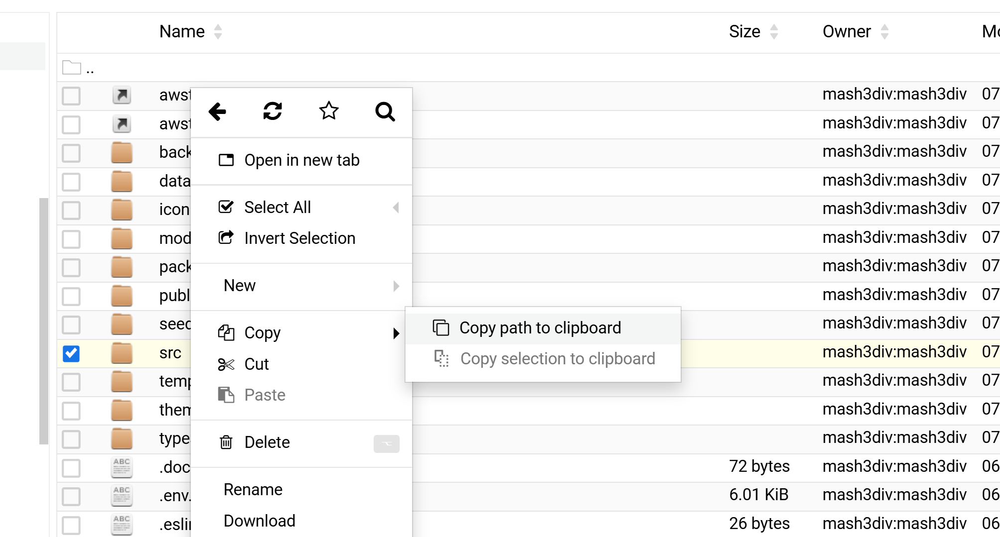Scroll down in the left sidebar of Virtualmin (or the top menu) to find the Root Terminal option. Click to open it.
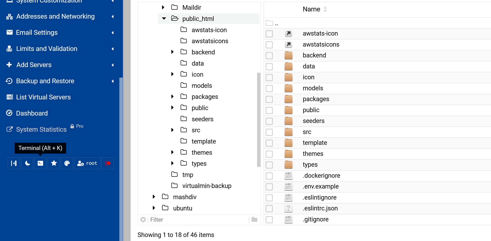public_htmlPaste the path you copied in step 7 to enter the Bicrypto folder. For example:
cd /path/to/public_html
Replace /path/to/public_html with your actual path from the clipboard.
Install dos2unix, convert the script if necessary, and run installer.sh:
sudo apt install dos2unix
dos2unix installer.sh
chmod +x installer.sh
sudo bash installer.sh
The installer will ask for your site URL. Enter it in the format https://domain.com without a trailing slash. It will also prompt for:
Site Name
Database Name
Database User
Password
Host (usually localhost)
Port (usually 3306 for MySQL)
After the installer completes, it will display default credentials for the super admin user. Important: Update the super admin email via phpMyAdmin or another database tool (e.g., TablePlus).
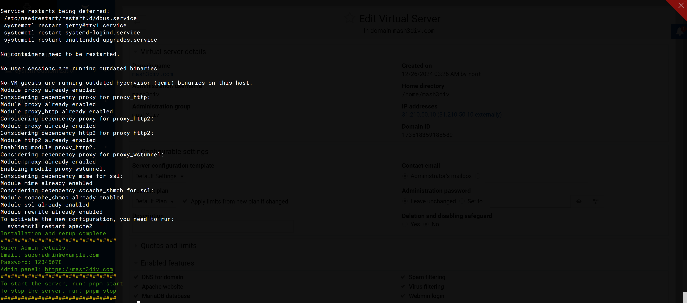Click the X to close the Root Terminal. Then return to your Virtualmin interface to edit the virtual server if needed.
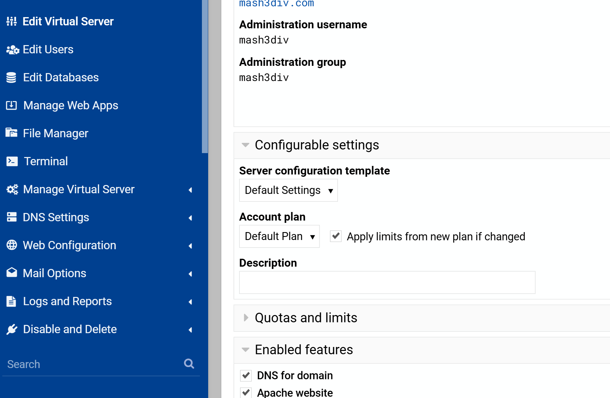In Edit Virtual Server, if you see Quotas and Limits, set both Total and Server quota to Unlimited. If you do not see this, you may skip this step.
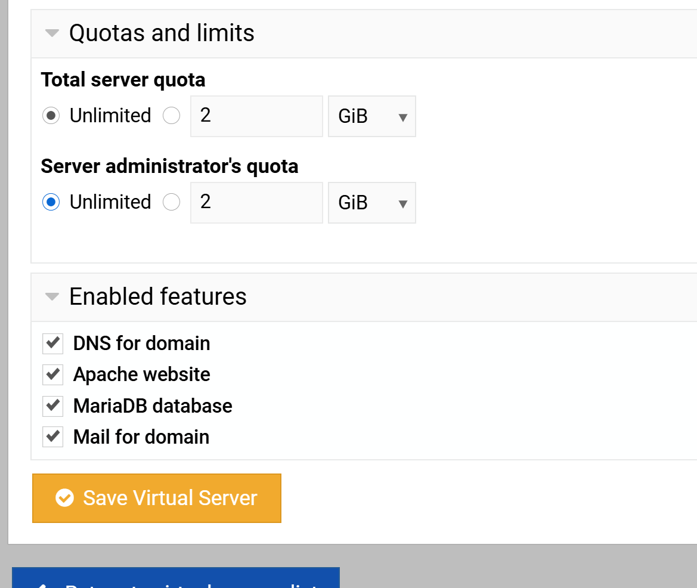Back in Virtualmin, open the File Manager again.
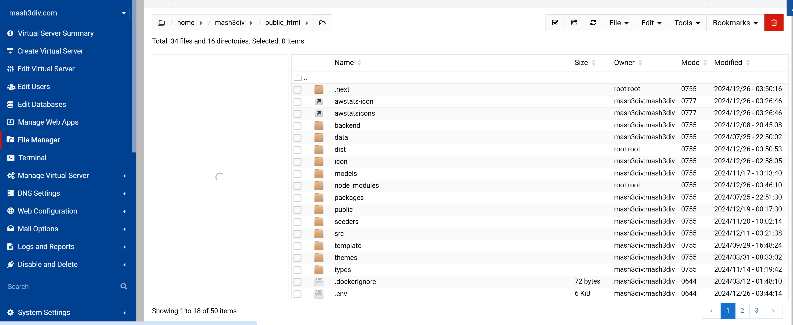
Right-click on any folder/file that isn't owned by root:root and choose Select All from the top notification to ensure all necessary files are selected.
Click Yes on the top notification to select all files across all pages in the File Manager (if applicable).
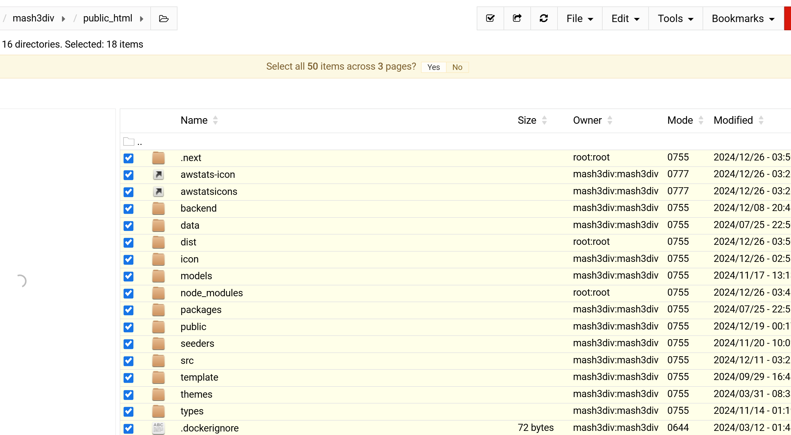
Right-click on any file that doesn't have root:root as the owner, then choose Properties to change file ownership.
In the Username and Group Name fields, specify the correct Virtualmin user and group. This will trigger a Recursive checkbox – check it, then click Change to apply it to all subdirectories and files.
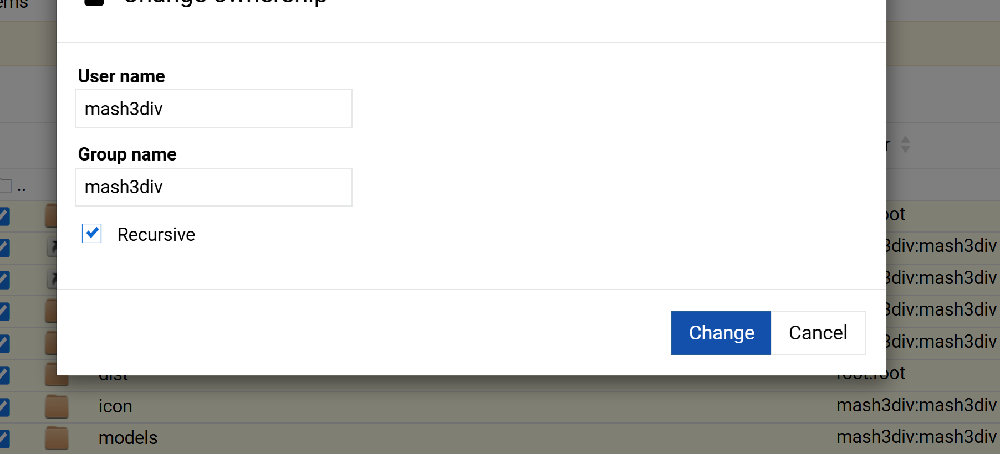
Below the File Manager, you'll see a User Terminal. Click to open it, then navigate again to public_html:
cd public_html
Run pnpm install to install frontend dependencies for Bicrypto. If prompted for confirmation, press Enter.
pnpm installFinally, start the Bicrypto application:
pnpm startWait about 20 seconds for the build and server to initialize. Your site should then be accessible at the domain you configured.
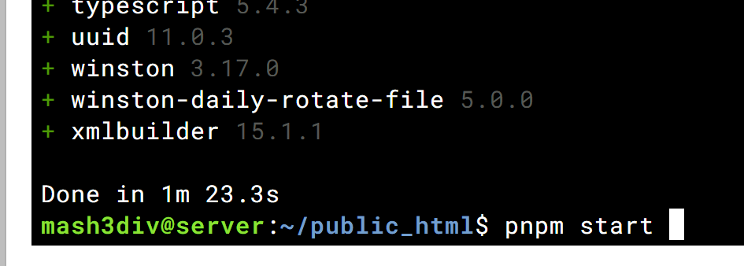
Check Permissions and Ownership: If you encounter permission errors, ensure your public_html folder and Bicrypto files are owned by the same Virtualmin user/group.
Use SSL Certificates: Properly install SSL certificates in Virtualmin for HTTPS support (including forced redirects if desired).
Monitor System Resources: For high traffic or frequent trading queries, consider increasing RAM/CPU or implementing a load balancer setup.
Security Best Practices: Keep your server up to date, configure firewalls, and consider fail2ban or other intrusion-prevention tools.